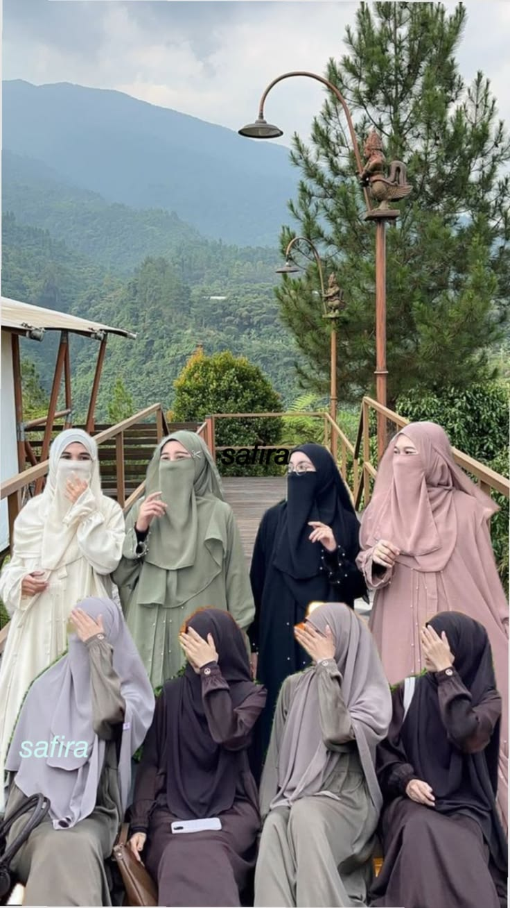
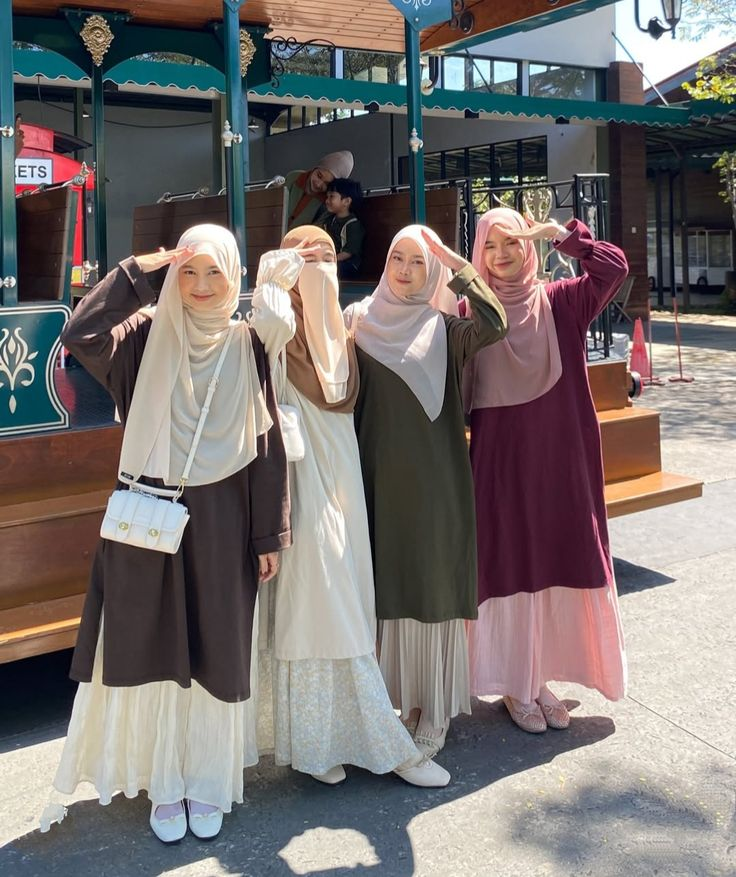

Ruang kolaborasi, inspirasi, dan dokumentasi seluruh rangkaian kegiatan positif ummat dan muslimah.

Berbagi ilmu dan mempererat tali silaturahmi antar sesama.

Penyaluran bantuan logistik untuk masyarakat yang membutuhkan.
Pelatihan kemandirian ekonomi kreatif bagi muslimah.
Kilas balik perjalanan dan pencapaian organisasi selama satu tahun terakhir.
Intip kesiapan panitia di balik layar dalam menyambut acara besar berikutnya.